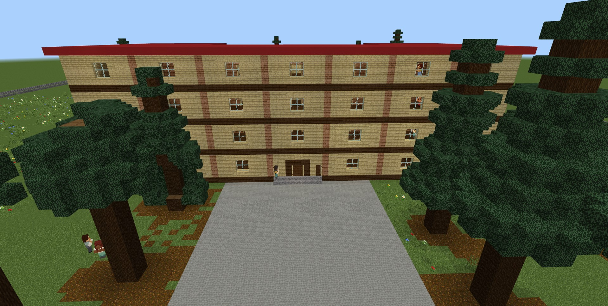
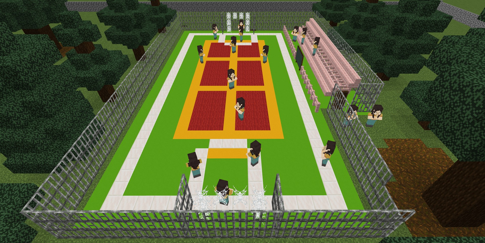
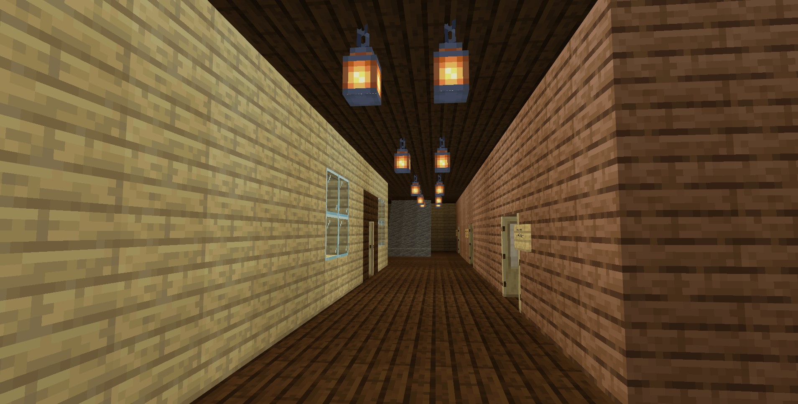

ინოვაციების ინკუბატორები / პროექტი 07
Minecraft.
სკოლა ვირტუალურ სამყაროში
ზუგდიდის N5 საჯარო სკოლის ვირტუალური მოდელი — რეალური გაზომვებიდან Minecraft-ში ვიზუალური პროგრამირებით აშენებულ სკოლამდე.

პროექტის შესახებ
ნაცნობი სკოლა —
ახალ, ციფრულ სამყაროში.
პროექტში VI ბ კლასის 25 მოსწავლე მონაწილეობდა. მათ გაზომეს სკოლის ეზოს პერიმეტრი, შენობის სიგანე, სიგრძე და სიმაღლე; შეისწავლეს ეზოში შენობა-ნაგებობებისა და მცენარეების განლაგება.
ამ დაკვირვებების საფუძველზე მოსწავლეებმა Minecraft-ის საგანმანათლებლო გარემოში ვირტუალური სკოლა ააშენეს. შენობის შესაქმნელად გამოიყენეს თამაშში ჩაშენებული ვიზუალური პროგრამირება.
პროექტი უკავშირდება ალგორითმების, ჩადგმული ციკლების, არითმეტიკული და ლოგიკური ოპერატორებისა და ცვლადების გამოყენებას. საბოლოო შედეგია სკოლის ციფრული მოდელი, რომელშიც შენობა, ეზო და შიდა სივრცეებია წარმოდგენილი.
პროექტის გალერეა
ვირტუალური სკოლის კადრები.
მოსწავლეთა ნამუშევარი
პროექტის პრეზენტაციიდან.


სკოლა ვირტუალურ სამყაროში
ვიდეოს ნახვა YouTube-ზე ↗გამოიკვლიე ვირტუალური სკოლა
ჩამოტვირთე პროექტის სამყარო (.mcworld) და გახსენი Minecraft Education-ში.
სამყაროს ჩამოტვირთვა ↓